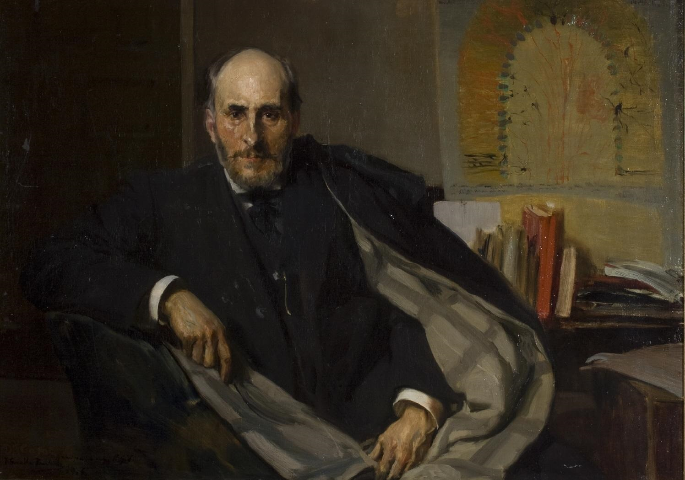
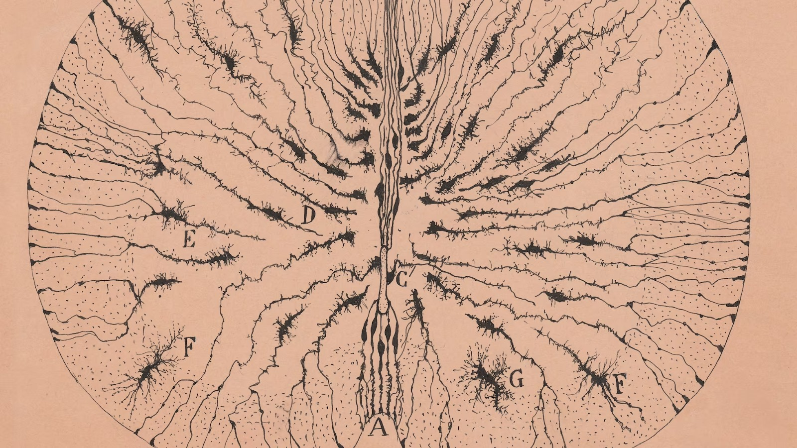

Bienvenido a la página de Santiago Ramón y Cajal
Descubre la vida y los descubrimientos de uno de los mayores científicos de la historia. Navega por las pestañas para conocer más sobre su biografía, sus investigaciones sobre las neuronas y datos curiosos.
Biografía
Santiago Ramón y Cajal fue uno de los científicos españoles más importantes de todos los tiempos y está considerado el padre de la neurociencia moderna. Nació el 1 de mayo de 1852 en Petilla de Aragón, un pequeño pueblo de Navarra. Su padre, Justo Ramón, era un médico que trabajaba en diferentes lugares, por lo que la familia se mudó varias veces mientras Santiago era pequeño. Desde muy joven, Santiago mostró una gran curiosidad por todo lo que le rodeaba. Le gustaba mucho dibujar y crear cosas, como juguetes e inventos con sus propias manos. A pesar de ser un niño muy inquieto e inteligente, Santiago no era un buen estudiante en la escuela. Tenía problemas con la disciplina y prefería pasar el tiempo en la naturaleza o dibujando en lugar de estudiar las materias escolares. Su padre, que quería que siguiera sus pasos en la medicina, se preocupaba por su futuro y lo animaba a estudiar con más esfuerzo. Aun así, Santiago siempre fue muy curioso y nunca dejó de hacer preguntas ni de investigar por su cuenta. Cuando terminó la educación básica, su padre lo matriculó en la Facultad de Medicina de la Universidad de Zaragoza. Allí empezó a interesarse más por las ciencias. Se graduó como médico en 1873, cuando tenía solo 21 años. Después de eso, trabajó como médico militar durante la Tercera Guerra Carlista, lo que le permitió viajar y aprender sobre distintas enfermedades y problemas de salud que afectaban a la gente. Sin embargo, su verdadera pasión era la investigación científica. Cuando terminó su servicio militar, se dedicó a estudiar cómo funciona el sistema nervioso, que es la parte del cuerpo que controla todos nuestros movimientos, pensamientos y emociones. En aquella época, el sistema nervioso era un gran misterio para los científicos, porque no se conocían bien las células que lo forman ni cómo funcionaban. Santiago Ramón y Cajal empezó a investigar las células del cerebro, llamadas neuronas. Para poder verlas bien, utilizó un método especial llamado tinción de Golgi, inventado por el científico italiano Camillo Golgi. Este método consiste en teñir las células con una sustancia química para que se vean mejor al microscopio. Gracias a esta técnica, Cajal pudo ver las neuronas con mucha más claridad que los científicos anteriores. Cajal no solo observó las neuronas, sino que también las dibujó con mucho cuidado y detalle. Sus dibujos eran tan buenos y precisos que todavía hoy se usan en los libros de medicina y biología. Gracias a sus observaciones y dibujos, Cajal descubrió que las neuronas no están conectadas de forma continua, como se pensaba antes. Él demostró que las neuronas son células independientes que se comunican entre sí a través de conexiones llamadas sinapsis. Esta idea se conoce como la doctrina de la neurona, y cambió por completo la manera en que los científicos entendían el cerebro y el sistema nervioso. Antes de Cajal, se pensaba que el cerebro era como una red continua, sin separación entre sus partes. Pero él demostró que el cerebro está formado por muchas células individuales que trabajan juntas. Sus descubrimientos ayudaron a entender mejor cómo funcionan nuestros pensamientos, emociones y movimientos.
En 1906, Santiago Ramón y Cajal recibió el Premio Nobel de Fisiología o Medicina, que compartió con Camillo Golgi. Fue el primer científico español en ganar este premio, lo que lo convirtió en un héroe de la ciencia en nuestro país. Su trabajo inspiró a muchos otros científicos a seguir estudiando el cerebro y ayudó a que la ciencia española se hiciera más conocida en el mundo. Además de sus descubrimientos en neurociencia, Cajal también fue un gran profesor y escritor. Escribió varios libros para explicar sus investigaciones y compartir sus ideas con otros científicos y estudiantes. Uno de sus libros más conocidos se llama “Textura del sistema nervioso del hombre y de los vertebrados”, donde describió con detalle cómo están formadas las neuronas y cómo funcionan. También escribió otro libro llamado “Recuerdos de mi vida”, en el que cuenta su historia personal y cómo llegó a ser científico. Cajal siempre animó a sus estudiantes a ser curiosos, a no conformarse con lo que ya se sabe y a pensar por sí mismos. Gracias a su forma de enseñar y su pasión por la ciencia, creó una importante escuela de investigadores en España que continuaron sus estudios y siguieron explorando los misterios del cerebro. A lo largo de su vida, Santiago Ramón y Cajal recibió muchos premios y reconocimientos, tanto en España como en otros países. Fue miembro de muchas academias y sociedades científicas de todo el mundo. Pero lo más importante para él no eran los premios, sino seguir aprendiendo y compartiendo sus descubrimientos con los demás. Cajal murió en Madrid el 17 de octubre de 1934, a los 82 años de edad. Aunque han pasado muchos años desde entonces, sus descubrimientos siguen siendo fundamentales para entender cómo funciona el cerebro. Gracias a él, hoy sabemos mucho más sobre las neuronas y cómo se comunican entre ellas, lo que ha permitido avanzar en el tratamiento de enfermedades del sistema nervioso. Su historia nos enseña que la curiosidad y el esfuerzo son claves para aprender cosas nuevas y mejorar el mundo en el que vivimos. También nos muestra que, aunque al principio no era un buen estudiante, su pasión por la ciencia y sus ganas de investigar lo llevaron a convertirse en uno de los científicos más importantes de la historia. Su vida es un ejemplo para todos aquellos que sueñan con descubrir cosas nuevas y hacer del mundo un lugar mejor.
¿Cómo funciona la neurona?
Santiago Ramón y Cajal fue un científico español que revolucionó nuestra forma de entender el cerebro y el sistema nervioso. Antes de sus descubrimientos, los científicos no tenían claro cómo funcionaba el cerebro, ni cómo estaban organizadas sus células. Gracias a su trabajo, hoy sabemos que el cerebro está formado por muchas células llamadas neuronas, y que estas son las encargadas de enviar y recibir información. Las neuronas son unas células muy especiales. Tienen un cuerpo central, llamado soma, del que salen unas ramitas llamadas dendritas y una fibra larga llamada axón. Las dendritas reciben señales de otras neuronas, mientras que el axón envía las señales a otras células. Juntas, las neuronas forman una red increíblemente compleja, que permite que podamos pensar, movernos, recordar y sentir. Antes de los estudios de Cajal, muchos científicos pensaban que el cerebro era como una red continua, sin separación entre sus partes. Pero Cajal descubrió que no es así. Usando un microscopio y un método especial para teñir las células, que le permitía verlas con mucha claridad, pudo observar que las neuronas son células separadas y distintas. Aunque están muy cerca unas de otras, no están unidas directamente. Esto significa que cada neurona es una célula independiente. Cajal también descubrió que las neuronas se comunican entre ellas a través de unas conexiones llamadas sinapsis. Estas sinapsis permiten que los impulsos eléctricos y químicos pasen de una neurona a otra, pero siempre respetando la separación entre ellas. Gracias a esta separación, el cerebro puede organizar la información de una forma muy ordenada.

Este gran descubrimiento se llamó la doctrina de la neurona. Fue muy importante porque cambió la forma de estudiar el cerebro y abrió el camino para entender cómo funcionan los pensamientos, la memoria, el aprendizaje y las emociones. Además, sirvió de base para investigar muchas enfermedades que afectan al sistema nervioso, como el Alzheimer o la epilepsia. Los dibujos de Cajal fueron también muy importantes. Como era un excelente dibujante, representó con mucho detalle cómo eran las neuronas y sus conexiones. Sus dibujos todavía se usan hoy en día en los libros de biología y medicina. Gracias a ellos, podemos aprender fácilmente cómo es una neurona y cómo se conectan unas con otras. Además de demostrar que las neuronas son células independientes, Cajal descubrió que estas células cambian y se adaptan con el uso. Esto se llama plasticidad neuronal. Significa que cuando aprendemos algo nuevo o practicamos mucho, las neuronas pueden fortalecer sus conexiones y mejorar la comunicación entre ellas. Por eso, cuanto más estudiamos o entrenamos, mejor funciona nuestro cerebro. En resumen, los descubrimientos de Santiago Ramón y Cajal sobre las neuronas nos ayudaron a entender cómo funciona nuestro cerebro y cómo podemos cuidarlo mejor. Su trabajo sigue siendo muy importante y nos recuerda que la curiosidad y la observación pueden ayudarnos a descubrir cosas maravillosas.
Datos Curiosos
- Artista de la ciencia: Sus dibujos a mano alzada siguen asombrando a científicos hoy en día.
- Un Nobel compartido: Ganó el Nobel junto a Camillo Golgi, aunque ambos tenían teorías opuestas sobre las neuronas.
- Curioso e inquieto: También fue un apasionado de la fotografía y la literatura.
- Estudió en Zaragoza: Allí se licenció en medicina, aunque empezó la carrera con dudas sobre si sería buen médico.
- Descubrió la doctrina de la neurona: Fue el primero en demostrar que las neuronas son células independientes.
- Fue médico militar:Durante la Tercera Guerra Carlista, trabajó como médico del ejército y atendió a muchos soldados heridos.
- Inventaba juguetes: Cuando era pequeño, fabricaba sus propios juguetes e incluso cañones de juguete con madera y cuerda.
- Era un gran maestro: Siempre animó a sus alumnos a pensar por sí mismos y no tener miedo de proponer nuevas ideas.
- Escribió su autobiografía: Se titula “Recuerdos de mi vida” y en ella cuenta cómo llegó a ser científico.

Video sobre Santiago Ramón y Cajal
Galería
Dibujo de Cajal de su observación en el microscopio
Dibujo de Cajal de su observación en el microscopio
Dibujo de Cajal de su observación en el microscopio
Dibujo de Cajal de su observación en el microscopio
Dibujo de Cajal de su observación en el microscopio
Dibujo de Cajal de su observación en el microscopio
Dibujo de Cajal de su observación en el microscopio
Santiago de culturista
Contacta conmigo
¿Quieres saber más o compartir información? ¡Estoy encantado de saber de ti!
Email: nicolas.herguera2@gmail.com
Teléfono: +34 676651852